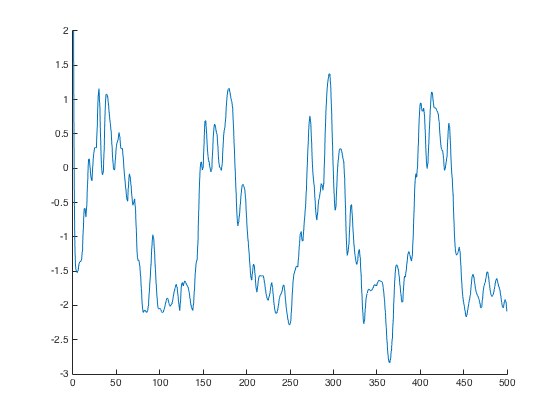
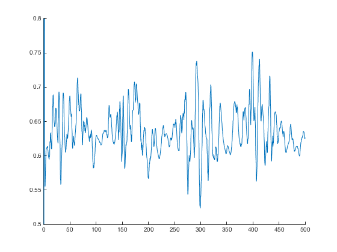
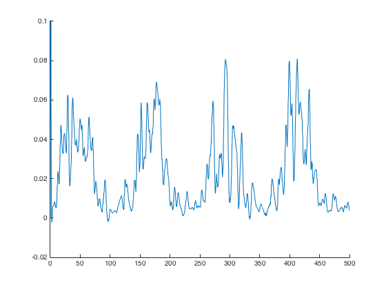
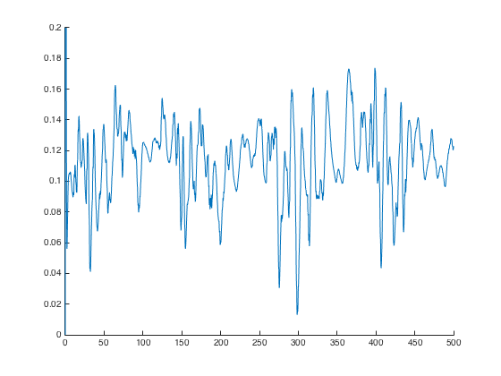

ESTIMATION OF CONDUCTANCES
2 DIMENSIONAL CONDUCTANCE-BASED MODELS OF QUADRATIC TYPE
This program estimates conductances in the subthreshold regime under
the presence of subthreshold-activated ionic currents. The method is
presented in C.Vich, A.Guillamon (2015), Journal of Computational
Neuroscience.
The estimation can be done in models that exhibit a parabolic nullcline
for the voltage and a linear nullcline for the recovery gating variable,
i.e. the resonant currents (e.g slow potassium) and amplifying currents
(e.g., persistent sodium).
CELL TYPE: medial entorhinal cortex layer II stellate cells and CA1
pyramidal cells.
Model needs to be quadratized (see Horacio G. Rotstein (2015) for more
details about the quadratization procedure), that is, it has to be
written as:
dv/dt = a*v^2 - w + Isyn(t) + Iapp
dw/dt = eps*( alpha*v - lambda - w)
such that
'v' stands for the membrane potential.
'w' stands for the set of gating variables.
'a' controls the curvature of the v-nullcline.
'alpha' controls the slope of the w-nullcline.
'eps' stands for the time scale separation between v and w,
which tends to be small.
'lambda' controls the relative displacement between the two
nullclines (the v one and the w one).
ESTIMATION PROCEDURE - Required information
We assume to have a quadratic approximation of a conductance-based neuron model,
as in H.Rotstein (2015). Given the resulting membrane potential (v) and
the course of the gating variable (w), this program estimates the synaptic
current that the neuron is receiving at each time.
Moreover, given the voltage traces for two different applied (steady) currents and the
excitatory and inhibitory reversal potentials, the program estimates the excitatory and
inhibitory conductances separately.
Finally, the program gives the option of estimating the synaptic
conductance. This conductance can be estimated in two different ways:
(1)if only one voltage trace is given, the synaptic conductance
is estimated using the synaptic reversal potential;
(2) however, if two voltage traces are given (for two different applied currents), then
the synaptic conductance can be either estimated using the synaptic reversal potential
or the leak conductance.
INPUTS AND OUTPUTS
* Input parameters:
To run the program, write on the command window the next sentence
main_Estimation_Conductances(t,v,w,Iapplied)
Such that:
t: vector of length m containing the discretization of the time
sample.
v: m x n matrix containing n different samples of membrane
potential corresponding at n different values of applied
current.
w: m x n matrix containing n different samples of the set of
gating variables corresponding at n different values of applied
current.
Iapplied: vector of length n containing the different values of applied
current. If its length is greater than or equal to 2, method
discerns between the excitatory and the inhibitory conductances.
* Required parameters which are asked while running:
a: parameter that controls the curvature of the v-nullcline.
alpha: parameter that controls the slope of the w-nullcline.
lambda: parameter that controls the relative displacement between the
two nullclines (the v one and the w one).
vE: excitatory reversal potential (if the Iapplied vector has
length greater than or equal to 2).
vI: inhibitory reversal potential (if the Iapplied vector has
length greater than or equal to 2).
and, if you want to estimate the synaptic conductance,
either
vsyn: synaptic reversal potential.
or
gL: synaptic conductance (only if the Iapplied vector has
length greater than or equal to 2).
* Output parameters:
The output parameters are given inside a .mat file called 'estimation.mat'
such that
Isyn: an m x n matrix containing the total synaptic current. Each
column corresponds to a different value of applied current.
gsyn: an m x n matrix containing the total synaptic conductance.
Each column corresponds to a different value of applied
current.
gE: vector of length m containing the excitatory synaptic
conductance. It is only computed if, at least, 2 applied
currents are considered.
gI: vector of length m containing the inhibitory synaptic
conductance. It is only computed if, at least, 2 applied
currents are considered.
ADJOINT EXAMPLE presented in C.Vich and A.Guillamon (2015)
A Matlab file called StellateModel.mat is added to the folder.
This file contains all the needed inputs to simulate an estimation
of the synaptic current, excitatory and inhibitory conductances and, giving the leak
conductance, also estimate the synaptic conductances.
Data comes from a reduced model for medial entorhinal cortex stellate cell
given in Rotstein et al (2006) that displays subthreshold oscillations.
The only considered activated currents in the model are the persistent sodium (INaP)
current and the h-(Ih) current.
Detailed Usage (matlab command line excerpt):
>> load StellateModel.mat
>> [Isyn, gsyn, gE, gI]=main_Estimation_Conductances(t, v, w, Iapplied);
------ ESTIMATION OF CONDUCTANCES ------
Write the parameter that controls the curvature of the v-nullcline
a = 0.1
Write the parameter that controls the slope of the w-nullcline.
alpha = 0.4
Write the parameter that controls the relative displacement between the two nullclines
lambda = -.2
Estimating the synaptic current from v and w...
The synaptic current has been estimated.
Since the applied current vector has length greater than 1,
we are going to estimate the excitatory and inhibitory conductances
Write the excitatory reversal potential.
vE = 55
Write the inhibitory reversal potential.
vI = -25
Estimating the excitatory and inhibitory conductances...
Do you want to estimate the synaptic conductance? Yes (Y) or No (N)
gSyn estimation = 'Y'
Do you want to estimate the synaptic conductance using
the synaptic reversal potential (vsyn) or the constant leak conductance (gL)
option to estimate the synaptic conductance = 'gL'
Write the constant leak conductance
gL = 0.5
>> figure(); hold on; plot(t,Isyn(2,:),'-'); axis([0 500 -3 2]); hold off;
>> figure(); hold on; plot(t,gsyn,'-'); axis([0 500 0.5 0.8]); hold off;
>> figure(); hold on; plot(t,gE,'-'); axis([0 500 -0.02 0.1]); hold off;
>> figure(); hold on; plot(t,gI,'-'); axis([0 500 0 0.2]); hold off;
These reproduce the dotted black traces in Figure 10A, 11A, 11B, 11C
respectively:



